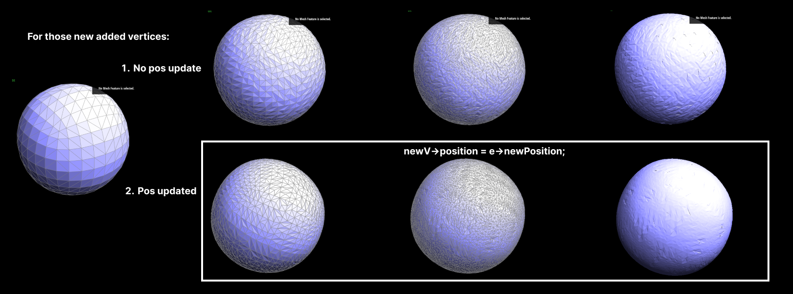
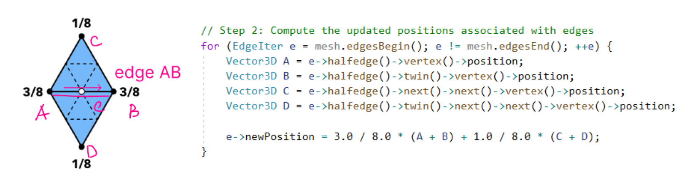
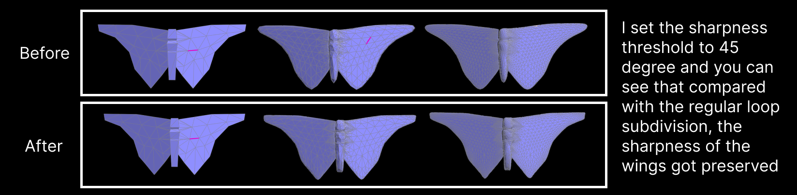

Task 6: 3D Mesh Upsampling and Loop Subdivision
In this task, we explore the challenges of upsampling 3D meshes, which is significantly more complex than
upsampling 2D images, such as the bilinear filtering discussed in Lecture 5. A key challenge is that
mesh vertices often occupy irregular locations, unlike the regular grid of a 2D image. There are several
other factors that complicate 3D mesh upsampling:
- Topological Complexity: 3D meshes typically have a more complex topological
structure compared to 2D images, making it difficult to simply fill gaps.
- Geometric Distortion: Upsampling can introduce geometric distortions, particularly
in curved or edged areas of the mesh.
- Texture Mapping Issues: 3D models often come with texture mapping, which needs to
be adjusted during upsampling, a process that can lead to texture stretching or other mapping
errors.
- Rendering Costs: Increasing the resolution of 3D meshes significantly raises
rendering time and computational costs.
- Lighting and Shadow Adjustments: Upsampling can alter the effects of lighting and
shadows on the mesh surface, necessitating additional computations.
- Data Structure Limitations: 3D meshes rely on specific data structures, which
impose certain restrictions on vertex addition or modification.
I initially struggled to understand why we use this 3/8 * (A + B) + 1/8 * (C + D) in
Loop subdivision instead of simply averaging the midpoints of triangle edges. I realized that this
formula is central to Loop subdivision, aiming to increase mesh smoothness while preserving detail. This
approach avoids sharp edges or unnatural shapes that might result from simpler vertex addition.
For new vertices (those added on the edge midpoints), the standard method is to average the positions of
the edge endpoints. However, Loop subdivision also considers the positions of adjacent vertices to
further enhance mesh smoothness. That's why we use the formula for new vertex positions.

Before implementing Task 6, I reviewed this
(1 - n * u) * original_position + u * original_neighbor_position_sum. It's crucial for
adjusting the positions of old vertices based on their neighboring vertices, which helps in maintaining
the geometric features while smoothing the mesh. The weight u depends on the vertex
degree
and balances between the original position and the average position of neighboring vertices.
Implementation Steps
- Reset isNew: Reset the state of vertices and edges before each
subdivision round, preparing the mesh for subsequent iterations.
- Old Vertex Position Calculation: Calculate new positions for all vertices using the
Loop subdivision rule, marking each as an original mesh vertex.
- New Vertex Position Calculation: Update new vertices' positions associated with
edges and store them to the edge. 
- Edge Splitting: Split every edge, noting which are new and which are from the
original mesh. Avoid splitting edges that were just split.
- Edge Flipping: Flip any new edge that connects an old and new vertex.
- Position Update: Update the mesh with the new vertex positions.
At the beginning, I actually wasn't able to execute this correctly, so you will see those weird mesh
shapes. In simple models, my errors were particularly obvious, such as with a box. However, in more
complex shapes like a cow and others, the errors were somewhat obscured by the complexity of the model.
So initially, when I tested on the peter.dae file, I thought my code was running correctly.

quadball
However, once I discovered the problem through the cube.dae, I began the debugging process. I first
re-checked the calculations of the new and old coordinates to ensure they were correct. Then I started
investigating if there was an issue with the creation of new vertices, but that wasn’t the case either.
I later found out the error was in the flipping process.
As you can see from the screenshot, the flip didn't execute at all, indicating that the newly created
edges did not pass the e->isNew condition. Upon checking my code, I realized that I had never marked my
edges as new. So, I returned to my Task 5’s splitEdge function, and this time, after splitting, I marked
all newly created edges as new. (Actually, at this step, I accidentally discovered that in Task 5 I
hadn't updated a vertex's halfedge relationship correctly, and I fixed it as well. It was then that I
deeply understood why the prompt says, “While correct behaviors do not imply correct code, incorrect
behaviors do imply incorrect code.”) Eventually, as you can see in the image below, I successfully fixed
my function.
And finally, at the beginning of the function, I updated the mesh state again to ensure that the next
subdivision could execute correctly. Now, when testing with the quadBall.dae file, everything runs
smoothly. I'm really happy üòÅ
Reducing the Smoothing Effect
Loop subdivision tends to smooth out sharp corners and edges in a mesh. You can see that very clearly in
a cube model as below:
This is generally beneficial for creating organic shapes but can be
undesirable when sharp features are needed.
Here are some methods that we casn use to reduce the Smoothing Effect
- Pre-splitting Edges: One approach to mitigate the smoothing effect on specific
parts of the mesh is to pre-split some edges before applying the Loop subdivision. By doing
this, you add more geometry to areas where you want to preserve detail. The added vertices and
edges provide more control over how the subdivision algorithm affects the shape of the mesh.
- Selective Subdivision: Another method is to apply subdivision selectively,
subdividing only certain parts of the mesh while leaving other areas (like sharp edges or
corners) untouched. This technique requires careful planning and mesh preparation but can yield
results that better preserve the original design intent.
- Using Creases: Some subdivision algorithms, including Loop subdivision, allow
for the use of "creases." Creases are a way to specify edges or vertices that should not be
smoothed out during subdivision. By assigning higher crease values to certain edges, you can
maintain their sharpness post-subdivision.
- Hybrid Approaches: Often, a combination of these techniques is used. For
instance, you might pre-split certain edges and apply creases to others, depending on the
specific requirements of your model and the desired level of detail or sharpness.
For using Pre-splitting Edges: I need to modify my current code to selectively pre-split certain edges
before the subdivision process begins. Therefore, I primarily added two
functions:calculateSharpness and preSplitEdges.
One is used to calculate the sharpness of an edge by calculating the angle between the normal vectors
of two adjacent
faces. Another is to pre-split edges by selecting edges based on a sharpness threshold. When testing the
model, I set this sharpness to M_PI / 4; and
called preSplitEdges(mesh, sharpnessThreshold)before performing loop subdivision in upsample.
void MeshResampler::upsample(HalfedgeMesh& mesh) {
double sharpnessThreshold = M_PI / 4;
preSplitEdges(mesh, sharpnessThreshold);
...
}The
improvement in preserving sharpness can be seen in the image below: 
Asymmetry
Several factors can cause asymmetry:
- Initial Topology: If the cube's initial topology is not evenly distributed (in terms of edge
lengths, face sizes, and vertex positions), the subdivision process can amplify these
irregularities, leading to asymmetry.
- Vertex Positioning: The vertices of the initial cube might not be perfectly aligned, or there might
be slight deviations in their positions, which become more pronounced after several iterations of
subdivision.
- Edge Flows: The way edges flow and connect can impact how subdivision algorithms modify the mesh. If
there's an inconsistency in edge flow, it can lead to asymmetrical results.
In the case of our cube, you can refer to the image in the last section. The asymmetry is due to
an inconsistency in the edge flow. If I flip two of the edges before upsampling, you can
see
now it's a symmetrical mesh. Here are 2 GIFs that show the differences:
So my pre-processing basically just ensures that the edges are symmetrically arranged around the
vertices. You can see from the GIF above how I ensure edge flows by flipping the edges. Therefore, when
performing loop subdivision, the mesh is symmetrical.

Extra Credit - Support meshes with boundary.
I started with making sure new boundary faces are marked as boundary faces
//FaceIter f2 = newFace();
FaceIter f2 = newBoundary(); // Create a new boundary face
This actually didn't work for me in the end so I switched back to newFace(); to fix it.
and this is how I calculate old vertex pos if it's a boundary vertex based on:
Vnew =
¾ V +
⅛ Vprev +
⅛ Vnext
if (isBoundaryVertex) {
// Apply boundary vertex rule
Vector3D vPrev = v->halfedge()->next()->next()->vertex()->position;
Vector3D vNext = v->halfedge()->twin()->next()->vertex()->position;
v->newPosition = 0.75 * v->position + 0.125 * (vPrev + vNext);
}
If i change this equation it gaves me interesting lookü§£like this:
And this is how I calculate new vertex pos:
if (e->isBoundary()) {
e->newPosition = 0.5 * (A + B);
}
After I fixed anything that I can think of, I got this smooth edges:
Conclusion
Task 6 demonstrates the complexity of 3D mesh upsampling and the effectiveness of the Loop subdivision
method. By carefully adjusting vertex positions and respecting the mesh's topological and geometric
properties, we can achieve a smoother and more detailed mesh.